參考資訊：
https://github.com/dwelch67/atsamd_samples
https://cdn.sparkfun.com/datasheets/Dev/Arduino/Boards/Atmel-42181-SAM-D21_Datasheet.pdf
LED腳位(PA-17)
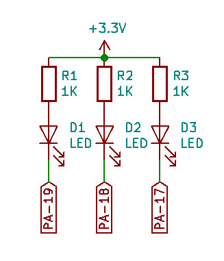


.cpu cortex-m0
.thumb
.equiv PORT_BASE, 0x41004400
.equiv PORT_A, 0x00
.equiv PORT_DIR, 0x00
.equiv PORT_OUT, 0x10
.thumb_func
.global _start
_start:
.word 0x20001000
.word reset
.word hang
.word hang
.word hang
.word hang
.word hang
.word hang
.word hang
.word hang
.word hang
.word hang
.word hang
.word hang
.word hang
.word hang
.thumb_func
reset:
ldr r0, =PORT_BASE
ldr r1, =(1 << 17)
str r1, [r0, #(PORT_A + PORT_DIR)]
ldr r2, =(1 << 17)
0:
eor r1, r2
str r1, [r0, #(PORT_A + PORT_OUT)]
ldr r3, =100000
1:
sub r3, #1
cmp r3, #0
bne 1b
b 0b
.thumb_func
hang:
b .
.end
main.ld
MEMORY {
RAM : ORIGIN = 0x00000000, LENGTH = 0x1000
}
SECTIONS {
.text : { *(.text*) } > RAM
.rodata : { *(.rodata*) } > RAM
.bss : { *(.bss*) } > RAM
}
Makefile
all: arm-none-eabi-as -mcpu=cortex-m0 -o main.o main.s arm-none-eabi-ld -T main.ld -o main.elf main.o arm-none-eabi-objcopy -O binary main.elf main.bin clean: rm -rf main.bin main.o main.elf
編譯
$ make
arm-none-eabi-as -mcpu=cortex-m0 -o main.o main.s
arm-none-eabi-ld -T main.ld -o main.elf main.o
arm-none-eabi-objcopy -O binary main.elf main.bin
開發板連接SWD後，開啟J-Flash
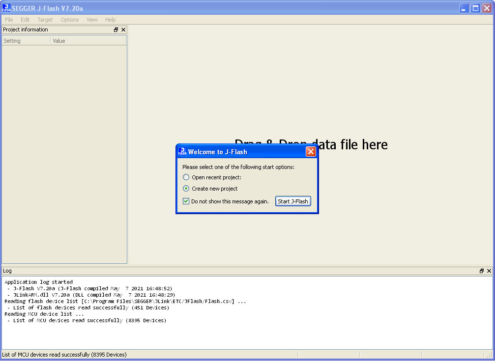
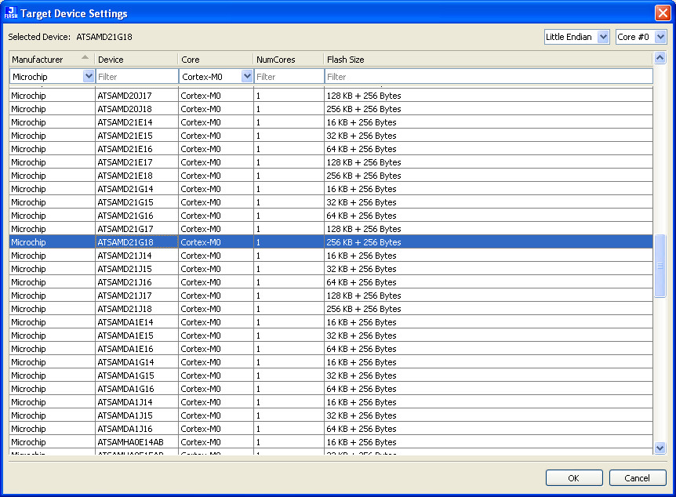
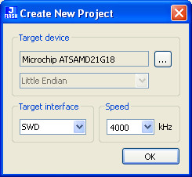
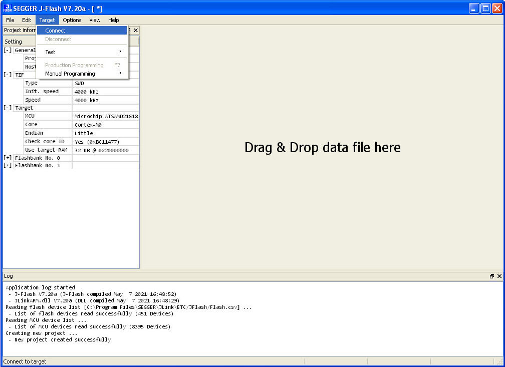
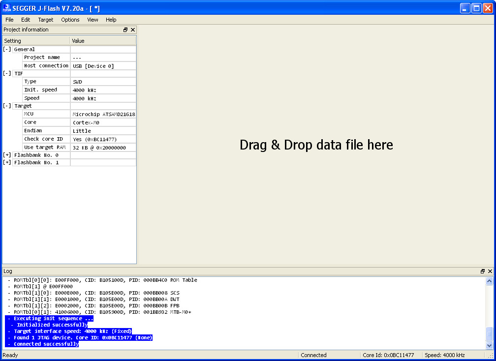
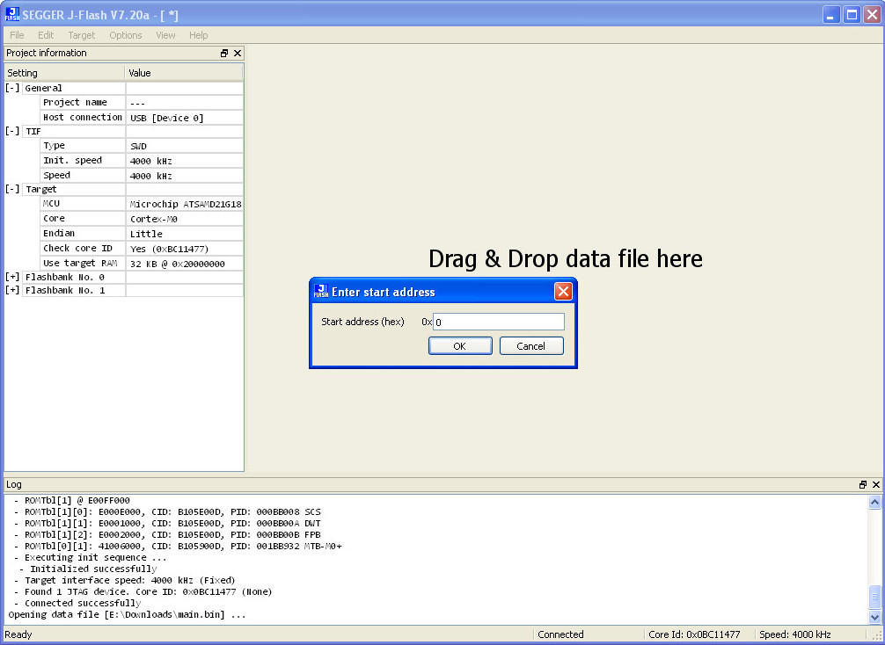
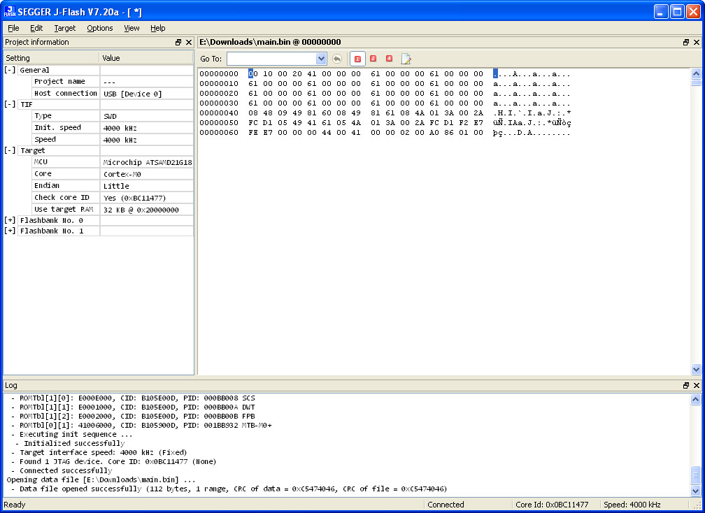
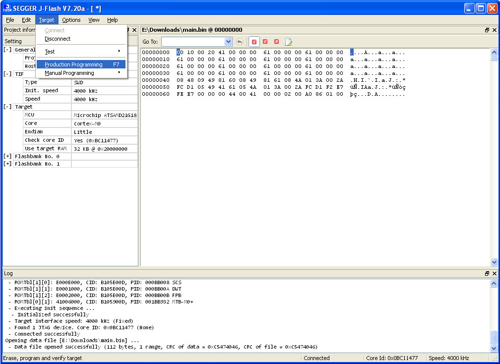
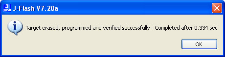
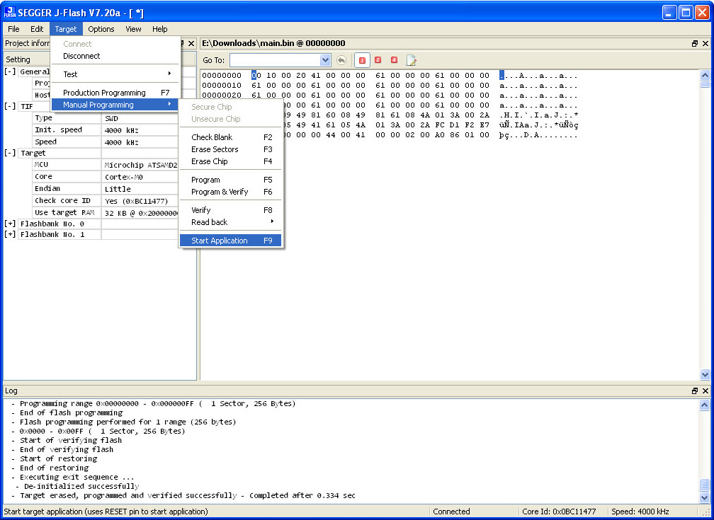
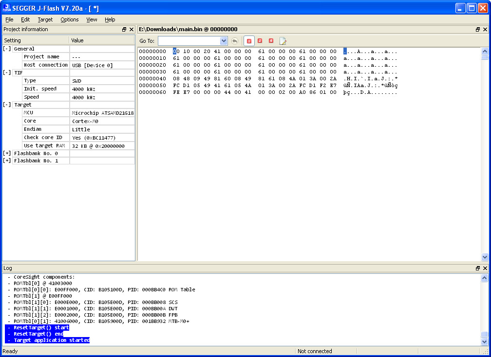
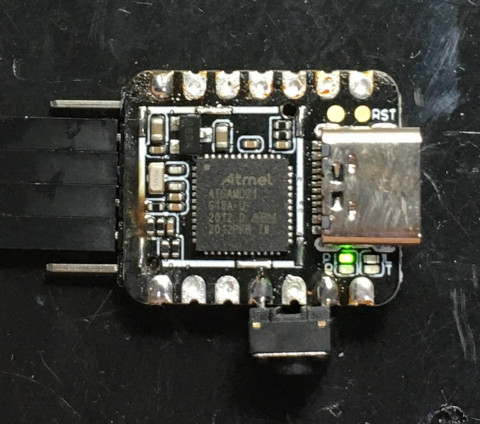
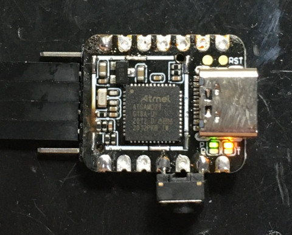